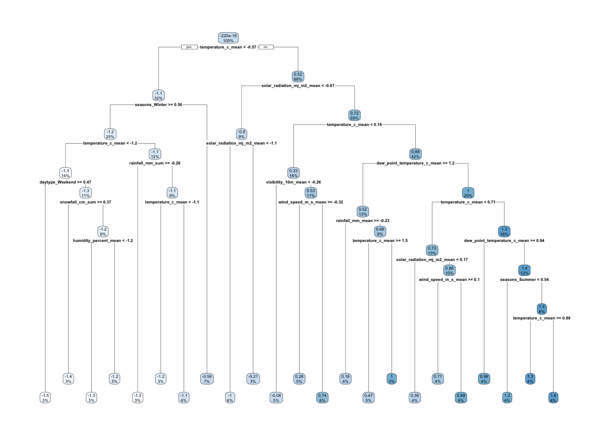
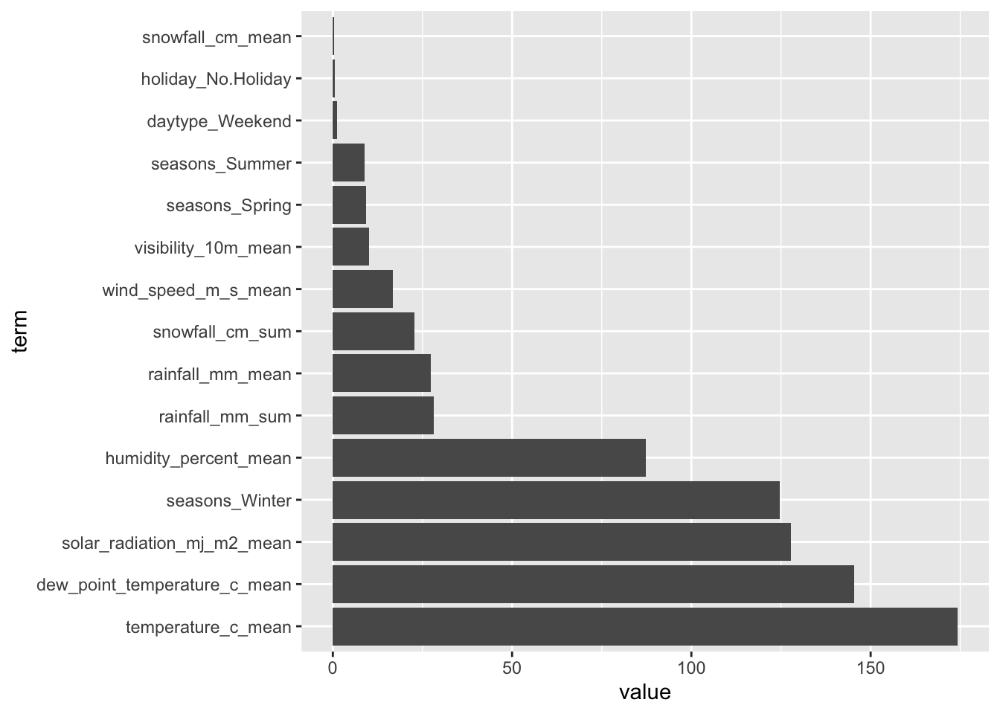

library(tidyverse)
df <- readr::read_csv("SeoulBikeData.csv",
locale = locale(encoding = "ISO-8859-1"),
show_col_types=FALSE)ST558 Assignment 09
Note: This is assignment 09, but the first part of it will be brought in from assignment 08.
Skip to the new content for Assignment 09
Read in the Data
Exploratory Data Analysis
The following steps will be taken to explore this data set:
- Check for “missingness” - in this case, just provide a count of how many missing values there are per variable.
df |>
summarize(across(everything(), ~sum(is.na(.))))# A tibble: 1 × 14
Date `Rented Bike Count` Hour `Temperature(°C)` `Humidity(%)`
<int> <int> <int> <int> <int>
1 0 0 0 0 0
# ℹ 9 more variables: `Wind speed (m/s)` <int>, `Visibility (10m)` <int>,
# `Dew point temperature(°C)` <int>, `Solar Radiation (MJ/m2)` <int>,
# `Rainfall(mm)` <int>, `Snowfall (cm)` <int>, Seasons <int>, Holiday <int>,
# `Functioning Day` <int>There are no missing values, apparently, for any variable in this data set.
- check the column types and values within columns to make sure they make sense – e.g., should a column be numeric but contains categories?
str(df)spc_tbl_ [8,760 × 14] (S3: spec_tbl_df/tbl_df/tbl/data.frame)
$ Date : chr [1:8760] "01/12/2017" "01/12/2017" "01/12/2017" "01/12/2017" ...
$ Rented Bike Count : num [1:8760] 254 204 173 107 78 100 181 460 930 490 ...
$ Hour : num [1:8760] 0 1 2 3 4 5 6 7 8 9 ...
$ Temperature(°C) : num [1:8760] -5.2 -5.5 -6 -6.2 -6 -6.4 -6.6 -7.4 -7.6 -6.5 ...
$ Humidity(%) : num [1:8760] 37 38 39 40 36 37 35 38 37 27 ...
$ Wind speed (m/s) : num [1:8760] 2.2 0.8 1 0.9 2.3 1.5 1.3 0.9 1.1 0.5 ...
$ Visibility (10m) : num [1:8760] 2000 2000 2000 2000 2000 ...
$ Dew point temperature(°C): num [1:8760] -17.6 -17.6 -17.7 -17.6 -18.6 -18.7 -19.5 -19.3 -19.8 -22.4 ...
$ Solar Radiation (MJ/m2) : num [1:8760] 0 0 0 0 0 0 0 0 0.01 0.23 ...
$ Rainfall(mm) : num [1:8760] 0 0 0 0 0 0 0 0 0 0 ...
$ Snowfall (cm) : num [1:8760] 0 0 0 0 0 0 0 0 0 0 ...
$ Seasons : chr [1:8760] "Winter" "Winter" "Winter" "Winter" ...
$ Holiday : chr [1:8760] "No Holiday" "No Holiday" "No Holiday" "No Holiday" ...
$ Functioning Day : chr [1:8760] "Yes" "Yes" "Yes" "Yes" ...
- attr(*, "spec")=
.. cols(
.. Date = col_character(),
.. `Rented Bike Count` = col_double(),
.. Hour = col_double(),
.. `Temperature(°C)` = col_double(),
.. `Humidity(%)` = col_double(),
.. `Wind speed (m/s)` = col_double(),
.. `Visibility (10m)` = col_double(),
.. `Dew point temperature(°C)` = col_double(),
.. `Solar Radiation (MJ/m2)` = col_double(),
.. `Rainfall(mm)` = col_double(),
.. `Snowfall (cm)` = col_double(),
.. Seasons = col_character(),
.. Holiday = col_character(),
.. `Functioning Day` = col_character()
.. )
- attr(*, "problems")=<externalptr> The only column that is “mismatched” between contents and Type is the Date column, which will be changed next:
Convert
Dateinto an actual Date if applicable.Turn character variables
Seasons,Holiday, andFunctioning Dayinto factors.Rename all variables to have easy-to-use names.
# Perform actions for steps 3, 4, and 5 at once:
df <- df |>
mutate(Date=as.Date(Date, "%d/%m/%Y"),
across(c(Seasons, Holiday, `Functioning Day`), factor)) |>
janitor::clean_names()
df# A tibble: 8,760 × 14
date rented_bike_count hour temperature_c humidity_percent
<date> <dbl> <dbl> <dbl> <dbl>
1 2017-12-01 254 0 -5.2 37
2 2017-12-01 204 1 -5.5 38
3 2017-12-01 173 2 -6 39
4 2017-12-01 107 3 -6.2 40
5 2017-12-01 78 4 -6 36
6 2017-12-01 100 5 -6.4 37
7 2017-12-01 181 6 -6.6 35
8 2017-12-01 460 7 -7.4 38
9 2017-12-01 930 8 -7.6 37
10 2017-12-01 490 9 -6.5 27
# ℹ 8,750 more rows
# ℹ 9 more variables: wind_speed_m_s <dbl>, visibility_10m <dbl>,
# dew_point_temperature_c <dbl>, solar_radiation_mj_m2 <dbl>,
# rainfall_mm <dbl>, snowfall_cm <dbl>, seasons <fct>, holiday <fct>,
# functioning_day <fct>- Create summary statistics related to the bike rental count. Subset the data especially on the
Functioning Dayvariable.
# Summary statistics on bike rental account.
df |>
summarize(mean=mean(rented_bike_count),
median=median(rented_bike_count),
sd=sd(rented_bike_count))# A tibble: 1 × 3
mean median sd
<dbl> <dbl> <dbl>
1 705. 504. 645.# Summarize on: Seasons
df |>
group_by(seasons) |>
summarize(mean=mean(rented_bike_count),
median=median(rented_bike_count),
sd=sd(rented_bike_count))# A tibble: 4 × 4
seasons mean median sd
<fct> <dbl> <dbl> <dbl>
1 Autumn 820. 764. 651.
2 Spring 730. 583 622.
3 Summer 1034. 906. 690.
4 Winter 226. 203 150.# Summarize on: Holiday
df |>
group_by(holiday) |>
summarize(mean=mean(rented_bike_count),
median=median(rented_bike_count),
sd=sd(rented_bike_count))# A tibble: 2 × 4
holiday mean median sd
<fct> <dbl> <dbl> <dbl>
1 Holiday 500. 240 571.
2 No Holiday 715. 524. 647.# Summarize on: Functioning Day
df |>
group_by(functioning_day) |>
summarize(mean=mean(rented_bike_count),
median=median(rented_bike_count),
sd=sd(rented_bike_count))# A tibble: 2 × 4
functioning_day mean median sd
<fct> <dbl> <dbl> <dbl>
1 No 0 0 0
2 Yes 729. 542 642.When variable functioning_day='No', there are no bike rentals occurring. Data will be subset to only show for functioning days.
df <- df |>
filter(functioning_day == "Yes")- Summarize across the hours so each day only has one observation associated with it.
For example,
group_by(date, seasons, holiday)variables; and obtain the sums of thebike_count,rainfall, andsnowfallvariables.Find the mean of all weather-related variables.
# Obtain the sums of `rented_bike_count`, `rainfall`, and `snowfall` for each date.
# additionally -- the mean of any "weather-related" variables. Which is essentially all the numeric variables we aren't grouping by.
data <- df |>
group_by(date, seasons, holiday) |>
summarize(across(c(rented_bike_count, rainfall_mm, snowfall_cm), list(sum=sum), .names="{.col}_{.fn}"),
across(where(is.numeric) & !ends_with("sum"), list(mean=mean), .names="{.col}_{.fn}"),
.groups="keep") |>
select(-rented_bike_count_mean, -hour_mean) # Remove the specific unnecessary columns.
data# A tibble: 353 × 14
# Groups: date, seasons, holiday [353]
date seasons holiday rented_bike_count_sum rainfall_mm_sum
<date> <fct> <fct> <dbl> <dbl>
1 2017-12-01 Winter No Holiday 9539 0
2 2017-12-02 Winter No Holiday 8523 0
3 2017-12-03 Winter No Holiday 7222 4
4 2017-12-04 Winter No Holiday 8729 0.1
5 2017-12-05 Winter No Holiday 8307 0
6 2017-12-06 Winter No Holiday 6669 1.3
7 2017-12-07 Winter No Holiday 8549 0
8 2017-12-08 Winter No Holiday 8032 0
9 2017-12-09 Winter No Holiday 7233 0
10 2017-12-10 Winter No Holiday 3453 4.1
# ℹ 343 more rows
# ℹ 9 more variables: snowfall_cm_sum <dbl>, temperature_c_mean <dbl>,
# humidity_percent_mean <dbl>, wind_speed_m_s_mean <dbl>,
# visibility_10m_mean <dbl>, dew_point_temperature_c_mean <dbl>,
# solar_radiation_mj_m2_mean <dbl>, rainfall_mm_mean <dbl>,
# snowfall_cm_mean <dbl>- Recreate basic summary stats and then create some plots to explore relationships. Report correlation between the numeric variables as well.
This table provides the average details per day. The summary statistics of bike rentals for this subset are:
data |>
group_by(seasons, holiday) |>
summarize(mean=mean(rented_bike_count_sum), median=median(rented_bike_count_sum), sd=sd(rented_bike_count_sum), .groups="keep")# A tibble: 8 × 5
# Groups: seasons, holiday [8]
seasons holiday mean median sd
<fct> <fct> <dbl> <dbl> <dbl>
1 Autumn Holiday 22754. 21705 5642.
2 Autumn No Holiday 22065. 23472 6792.
3 Spring Holiday 15247. 13790 10917.
4 Spring No Holiday 18002. 17730 8322.
5 Summer Holiday 24532. 24532. 8438.
6 Summer No Holiday 24824. 25572. 7324.
7 Winter Holiday 3759 3454. 1561.
8 Winter No Holiday 5574. 5609 1757.Splitting the Data
Using functions from tidymodels to create a 75/25 training/test data split. Use the strata argument to stratify split on seasons.
- On the TRAINING set, create 10-fold CV split.
library(tidymodels)
bike_split <- initial_split(data=data, prop=0.75, strata=seasons)
bike_train <- training(bike_split)
bike_test <- testing(bike_split)Fitting MLR Models
For the 1st recipe:
Ignore the Date variable for modeling, but use it to create a weekday/weekend (factor) variable.
Standardize the numeric variables since their scales are pretty different.
Create dummy variables for the seasons, holiday, and our new day type variable
recipe.1 <- recipe(rented_bike_count_sum ~ ., data=bike_train) |>
step_date(date, features=c("dow")) |>
step_mutate(daytype = factor(if_else(date_dow %in% c("Sat", "Sun"), "Weekend", "Weekday"))) |>
step_rm(date, date_dow) |>
step_dummy(seasons, holiday, daytype) |>
step_normalize(all_numeric())
recipe.1── Recipe ──────────────────────────────────────────────────────────────────────── Inputs Number of variables by roleoutcome: 1
predictor: 13── Operations • Date features from: date• Variable mutation for: factor(if_else(date_dow %in% c("Sat", "Sun"),
"Weekend", "Weekday"))• Variables removed: date date_dow• Dummy variables from: seasons, holiday, daytype• Centering and scaling for: all_numeric()For the 2nd recipe:
Do the same steps as above.
Add in interactions between seasons and holiday, seasons and temp, temp and rainfall. For the seasons interactions, you can use starts_with() to create the proper interactions.
recipe.2 <- recipe(rented_bike_count_sum ~ ., data=bike_train) |>
step_date(date, features="dow") |>
step_mutate(daytype = factor(if_else(date_dow %in% c("Sat", "Sun"), "Weekend", "Weekday"))) |>
step_normalize(all_numeric()) |>
step_dummy(seasons, holiday, daytype) |>
step_rm(date_dow) |>
step_interact(terms = ~ holiday_No.Holiday:starts_with("seasons_")) |>
step_interact(terms = ~ temperature_c_mean:starts_with("seasons_")) |>
step_interact(terms = ~ temperature_c_mean:rainfall_mm_mean)
recipe.2── Recipe ──────────────────────────────────────────────────────────────────────── Inputs Number of variables by roleoutcome: 1
predictor: 13── Operations • Date features from: date• Variable mutation for: factor(if_else(date_dow %in% c("Sat", "Sun"),
"Weekend", "Weekday"))• Centering and scaling for: all_numeric()• Dummy variables from: seasons, holiday, daytype• Variables removed: date_dow• Interactions with: holiday_No.Holiday:starts_with("seasons_")• Interactions with: temperature_c_mean:starts_with("seasons_")• Interactions with: temperature_c_mean:rainfall_mm_meanFor the 3rd recipe:
Do the same as the 2nd recipe.
Add in quadratic terms for each numeric predictor
recipe.3 <- recipe(rented_bike_count_sum ~ ., data=bike_train) |>
step_poly(all_numeric_predictors(), keep_original_cols = TRUE) |>
step_date(date, features="dow") |>
step_mutate(daytype = factor(if_else(date_dow %in% c("Sat", "Sun"), "Weekend", "Weekday"))) |>
step_normalize(all_numeric()) |>
step_rm(date_dow) |>
step_dummy(seasons, holiday, daytype) |>
step_interact(terms = ~ holiday_No.Holiday:starts_with("seasons_")) |>
step_interact(terms = ~ temperature_c_mean:starts_with("seasons_")) |>
step_interact(terms = ~ temperature_c_mean:rainfall_mm_mean)
recipe.3── Recipe ──────────────────────────────────────────────────────────────────────── Inputs Number of variables by roleoutcome: 1
predictor: 13── Operations • Polynomial expansion on: all_numeric_predictors()• Date features from: date• Variable mutation for: factor(if_else(date_dow %in% c("Sat", "Sun"),
"Weekend", "Weekday"))• Centering and scaling for: all_numeric()• Variables removed: date_dow• Dummy variables from: seasons, holiday, daytype• Interactions with: holiday_No.Holiday:starts_with("seasons_")• Interactions with: temperature_c_mean:starts_with("seasons_")• Interactions with: temperature_c_mean:rainfall_mm_meanEstablish linear model fit to use the “lm” engine.
Fit the models using 10 fold CV via fit_resamples() and consider the training set CV error to choose a best model.
# Establish the MLR using "lm" engine.
bike_mlr <- linear_reg() |>
set_engine("lm")
# Creation of the workflow using Recipe 1
rec1_wfl <- workflow() |>
add_recipe(recipe.1) |>
add_model(bike_mlr)
rec1_wfl══ Workflow ════════════════════════════════════════════════════════════════════
Preprocessor: Recipe
Model: linear_reg()
── Preprocessor ────────────────────────────────────────────────────────────────
5 Recipe Steps
• step_date()
• step_mutate()
• step_rm()
• step_dummy()
• step_normalize()
── Model ───────────────────────────────────────────────────────────────────────
Linear Regression Model Specification (regression)
Computational engine: lm # Create a 10-fold CV Split to be used for each test
bike_train_10fold <- vfold_cv(bike_train, 10)
# And using our 10-fold CV training set on this workflow.
rec1_cvFits <- rec1_wfl |>
fit_resamples(bike_train_10fold)
rec1_cvFits |> collect_metrics()# A tibble: 2 × 6
.metric .estimator mean n std_err .config
<chr> <chr> <dbl> <int> <dbl> <chr>
1 rmse standard 0.421 10 0.0178 pre0_mod0_post0
2 rsq standard 0.830 10 0.0107 pre0_mod0_post0# Repeat the same tasks for Recipes 2 and 3
rec2_wfl <- workflow() |>
add_recipe(recipe.2) |>
add_model(bike_mlr)
rec2_wfl══ Workflow ════════════════════════════════════════════════════════════════════
Preprocessor: Recipe
Model: linear_reg()
── Preprocessor ────────────────────────────────────────────────────────────────
8 Recipe Steps
• step_date()
• step_mutate()
• step_normalize()
• step_dummy()
• step_rm()
• step_interact()
• step_interact()
• step_interact()
── Model ───────────────────────────────────────────────────────────────────────
Linear Regression Model Specification (regression)
Computational engine: lm rec2_cvFits <- rec2_wfl |>
fit_resamples(bike_train_10fold)
rec2_cvFits |> collect_metrics()# A tibble: 2 × 6
.metric .estimator mean n std_err .config
<chr> <chr> <dbl> <int> <dbl> <chr>
1 rmse standard 0.290 10 0.0150 pre0_mod0_post0
2 rsq standard 0.918 10 0.00804 pre0_mod0_post0rec3_wfl <- workflow() |>
add_recipe(recipe.3) |>
add_model(bike_mlr)
rec3_wfl══ Workflow ════════════════════════════════════════════════════════════════════
Preprocessor: Recipe
Model: linear_reg()
── Preprocessor ────────────────────────────────────────────────────────────────
9 Recipe Steps
• step_poly()
• step_date()
• step_mutate()
• step_normalize()
• step_rm()
• step_dummy()
• step_interact()
• step_interact()
• step_interact()
── Model ───────────────────────────────────────────────────────────────────────
Linear Regression Model Specification (regression)
Computational engine: lm rec3_cvFits <- rec3_wfl |>
fit_resamples(bike_train_10fold)
rec3_cvFits |> collect_metrics()# A tibble: 2 × 6
.metric .estimator mean n std_err .config
<chr> <chr> <dbl> <int> <dbl> <chr>
1 rmse standard 0.274 10 0.0142 pre0_mod0_post0
2 rsq standard 0.927 10 0.00704 pre0_mod0_post0For these three models, the model with the lowest RMSE is Model 3, which includes the quadratic terms. Utilizing this model on the entire training set,
full_training <- rec3_wfl |>
last_fit(split=bike_split)→ A | warning: prediction from a rank-deficient fit may be misleadingThere were issues with some computations A: x1
There were issues with some computations A: x1full_training# Resampling results
# Manual resampling
# A tibble: 1 × 6
splits id .metrics .notes .predictions .workflow
<list> <chr> <list> <list> <list> <list>
1 <split [263/90]> train/test split <tibble> <tibble> <tibble> <workflow>
There were issues with some computations:
- Warning(s) x1: prediction from a rank-deficient fit may be misleading
Run `show_notes(.Last.tune.result)` for more information.Compute the RMSE metric on the test set:
full_training |> collect_metrics()# A tibble: 2 × 4
.metric .estimator .estimate .config
<chr> <chr> <dbl> <chr>
1 rmse standard 0.354 pre0_mod0_post0
2 rsq standard 0.878 pre0_mod0_post0The final coefficient table can be obtained using extract_fit_parsnip() and tidy().
coef_table <- full_training |>
extract_fit_parsnip() |>
tidy()
coef_table# A tibble: 44 × 5
term estimate std.error statistic p.value
<chr> <dbl> <dbl> <dbl> <dbl>
1 (Intercept) 19.8 15.9 1.24 2.15e- 1
2 date -0.00113 0.000894 -1.27 2.06e- 1
3 rainfall_mm_sum -0.709 0.230 -3.08 2.35e- 3
4 snowfall_cm_sum -0.0150 0.0187 -0.800 4.25e- 1
5 temperature_c_mean 0.377 0.372 1.01 3.12e- 1
6 humidity_percent_mean -0.112 0.126 -0.890 3.74e- 1
7 wind_speed_m_s_mean -0.0495 0.0185 -2.68 7.97e- 3
8 visibility_10m_mean 0.0447 0.0238 1.88 6.14e- 2
9 dew_point_temperature_c_mean 0.195 0.423 0.461 6.46e- 1
10 solar_radiation_mj_m2_mean 0.234 0.0327 7.14 1.18e-11
# ℹ 34 more rowsThis ends the repeated section from Homework 08. This point further includes the new additions for Homework 09.
To Do:
Adding to this documentation, the first recipe from above (using no quadratics or interactions) should be modeled using:
a (tuned) LASSO model
a (tuned) Regression Tree model
a (tuned) Bagged Tree model
a (tuned) Random Forest model
Each model should be fit and tuned on the training set, and the best model from each family of models should be fit to the training data set and used to see how well it predicts the test set.
Taking from above, the first recipe (recipe.1) will be modeled with the various modalities outlined.
The first modeled procedure will be the LASSO method.
# First method: LASSO. Establish with recipe.1 and the GLMNET engine.
LASSO_wkfl <- workflow() |>
add_recipe(recipe.1) |>
add_model(linear_reg(penalty=tune(), mixture=1) |>
set_engine("glmnet"))
# Generate the Grid of model fits on the 10-fold CV variable.
LASSO_grid <- LASSO_wkfl |>
tune_grid(resamples = bike_train_10fold,
grid=grid_regular(penalty(), levels=200))→ A | warning: A correlation computation is required, but `estimate` is constant and has 0
standard deviation, resulting in a divide by 0 error. `NA` will be returned.There were issues with some computations A: x3There were issues with some computations A: x6There were issues with some computations A: x9There were issues with some computations A: x12There were issues with some computations A: x15There were issues with some computations A: x18There were issues with some computations A: x21There were issues with some computations A: x24There were issues with some computations A: x27There were issues with some computations A: x30
There were issues with some computations A: x30LASSO_grid# Tuning results
# 10-fold cross-validation
# A tibble: 10 × 4
splits id .metrics .notes
<list> <chr> <list> <list>
1 <split [236/27]> Fold01 <tibble [400 × 5]> <tibble [3 × 4]>
2 <split [236/27]> Fold02 <tibble [400 × 5]> <tibble [3 × 4]>
3 <split [236/27]> Fold03 <tibble [400 × 5]> <tibble [3 × 4]>
4 <split [237/26]> Fold04 <tibble [400 × 5]> <tibble [3 × 4]>
5 <split [237/26]> Fold05 <tibble [400 × 5]> <tibble [3 × 4]>
6 <split [237/26]> Fold06 <tibble [400 × 5]> <tibble [3 × 4]>
7 <split [237/26]> Fold07 <tibble [400 × 5]> <tibble [3 × 4]>
8 <split [237/26]> Fold08 <tibble [400 × 5]> <tibble [3 × 4]>
9 <split [237/26]> Fold09 <tibble [400 × 5]> <tibble [3 × 4]>
10 <split [237/26]> Fold10 <tibble [400 × 5]> <tibble [3 × 4]>
There were issues with some computations:
- Warning(s) x30: A correlation computation is required, but `estimate` is constant...
Run `show_notes(.Last.tune.result)` for more information.# The lowest RMSE is
LASSO_lowest_rmse <- LASSO_grid |>
select_best(metric="rmse")
LASSO_lowest_rmse# A tibble: 1 × 2
penalty .config
<dbl> <chr>
1 0.0000000001 pre0_mod001_post0# Fitting this best-tuned model on the training set,
LASSO_final <- LASSO_wkfl |>
finalize_workflow(LASSO_lowest_rmse) |>
fit(bike_train)
# Running the LASSO model on the Test set
LASSO_test_metrics <- LASSO_wkfl |>
finalize_workflow(LASSO_lowest_rmse) |>
last_fit(bike_split) |>
collect_metrics()
LASSO_test_metrics# A tibble: 2 × 4
.metric .estimator .estimate .config
<chr> <chr> <dbl> <chr>
1 rmse standard 0.407 pre0_mod0_post0
2 rsq standard 0.841 pre0_mod0_post0The second model to be evaluated is the Regression Tree model.
# Establish the Regression Tree model using recipe.1:
library(tree)
tree_wkfl <- workflow() |>
add_recipe(recipe.1) |>
add_model(decision_tree(tree_depth = tune(),
min_n=20,
cost_complexity = tune()) |>
set_engine("rpart") |>
set_mode("regression"))
# Creation of the tuning grid
tree_grid <- grid_regular(cost_complexity(), tree_depth(), levels = c(10, 5))
# Tune these by fitting to the CV-Folds
tree_fits <- tree_wkfl |>
tune_grid(resamples=bike_train_10fold, grid=tree_grid)
tree_fits |> collect_metrics()# A tibble: 100 × 8
cost_complexity tree_depth .metric .estimator mean n std_err .config
<dbl> <int> <chr> <chr> <dbl> <int> <dbl> <chr>
1 0.0000000001 1 rmse standard 0.684 10 0.0408 pre0_mod01…
2 0.0000000001 1 rsq standard 0.537 10 0.0458 pre0_mod01…
3 0.0000000001 4 rmse standard 0.463 10 0.0240 pre0_mod02…
4 0.0000000001 4 rsq standard 0.785 10 0.0201 pre0_mod02…
5 0.0000000001 8 rmse standard 0.403 10 0.0207 pre0_mod03…
6 0.0000000001 8 rsq standard 0.841 10 0.0148 pre0_mod03…
7 0.0000000001 11 rmse standard 0.403 10 0.0207 pre0_mod04…
8 0.0000000001 11 rsq standard 0.841 10 0.0148 pre0_mod04…
9 0.0000000001 15 rmse standard 0.403 10 0.0207 pre0_mod05…
10 0.0000000001 15 rsq standard 0.841 10 0.0148 pre0_mod05…
# ℹ 90 more rows# The optimum tuning parameter
tree_best <- select_best(tree_fits, metric="rmse")
tree_best# A tibble: 1 × 3
cost_complexity tree_depth .config
<dbl> <int> <chr>
1 0.0000000001 8 pre0_mod03_post0# Fit the final model on the entire training set
tree_final_fit <- tree_wkfl |>
finalize_workflow(tree_best) |>
last_fit(bike_split)
tree_final_fit |>
collect_metrics()# A tibble: 2 × 4
.metric .estimator .estimate .config
<chr> <chr> <dbl> <chr>
1 rmse standard 0.383 pre0_mod0_post0
2 rsq standard 0.858 pre0_mod0_post0The third model is the Bagged Tree Model.
library(baguette)
bag_wkfl <- workflow() |>
add_recipe(recipe.1) |>
add_model(bag_tree(tree_depth=5, min_n=10, cost_complexity=tune()) |>
set_engine("rpart") |>
set_mode("regression"))
# Fit this workflow to our 10-fold CV fits
bag_fit <- bag_wkfl |>
tune_grid(resamples=bike_train_10fold,
grid=grid_regular(cost_complexity(), levels=15),
metrics=metric_set(rmse, rsq, mae))
# The best tuning parameter from this 10-fold CV fit
bag_best <- select_best(bag_fit, metric="rmse")
bag_best# A tibble: 1 × 2
cost_complexity .config
<dbl> <chr>
1 0.000268 pre0_mod11_post0# Fit the entire training set on this tuning parameter
bag_final_fit <- bag_wkfl |>
finalize_workflow(bag_best) |>
last_fit(bike_split, metrics=metric_set(rmse, rsq, mae))
# The final metrics for this model
bag_final_fit |> collect_metrics()# A tibble: 3 × 4
.metric .estimator .estimate .config
<chr> <chr> <dbl> <chr>
1 rmse standard 0.308 pre0_mod0_post0
2 rsq standard 0.907 pre0_mod0_post0
3 mae standard 0.240 pre0_mod0_post0Finally, a tuned random forest.
library(ranger)
rf_wkfl <- workflow() |>
add_recipe(recipe.1) |>
add_model(rand_forest(mtry = tune(), trees=500) |>
set_engine("ranger", importance="permutation") |>
set_mode("regression"))
# Fit the model to the CV folds
rf_fit <- rf_wkfl |>
tune_grid(resamples = bike_train_10fold,
grid=7,
metrics=metric_set(rmse, rsq, mae))i Creating pre-processing data to finalize 1 unknown parameter: "mtry"# The metrics across the folds:
rf_fit |>
collect_metrics() |>
filter(.metric == "rmse") |>
arrange(mean)# A tibble: 7 × 7
mtry .metric .estimator mean n std_err .config
<int> <chr> <chr> <dbl> <int> <dbl> <chr>
1 15 rmse standard 0.284 10 0.0125 pre0_mod7_post0
2 13 rmse standard 0.287 10 0.0120 pre0_mod6_post0
3 10 rmse standard 0.290 10 0.0114 pre0_mod5_post0
4 8 rmse standard 0.293 10 0.0117 pre0_mod4_post0
5 5 rmse standard 0.300 10 0.0116 pre0_mod3_post0
6 3 rmse standard 0.319 10 0.0121 pre0_mod2_post0
7 1 rmse standard 0.496 10 0.0214 pre0_mod1_post0# Select the best entry
best_mtry <- rf_fit |>
select_best(metric="rmse") |>
pull(mtry)
# Get the best tuning parameter and refit on the entire training set
rf_final_fit <- rf_wkfl |>
finalize_workflow(select_best(rf_fit, metric="rmse")) |>
last_fit(bike_split, metrics=metric_set(rmse, rsq, mae))
rf_final_fit |> collect_metrics()# A tibble: 3 × 4
.metric .estimator .estimate .config
<chr> <chr> <dbl> <chr>
1 rmse standard 0.284 pre0_mod0_post0
2 rsq standard 0.921 pre0_mod0_post0
3 mae standard 0.223 pre0_mod0_post0All final models (including best MLR from Assignment 08) should be compared using both RMSE and MAE.
For LASSO and MLR, report final coefficient table.
For the regression tree model, give a plot of the final fit.
For the bagged tree and random forest models, produce a variable importance plot.
Find the overall best model, and fit this to the entire data set.
The final coefficient tables, utilizing the same coefficient table from Assignment 08 and replicating for the LASSO method:
# MLR, From assignment 08
coef_table# A tibble: 44 × 5
term estimate std.error statistic p.value
<chr> <dbl> <dbl> <dbl> <dbl>
1 (Intercept) 19.8 15.9 1.24 2.15e- 1
2 date -0.00113 0.000894 -1.27 2.06e- 1
3 rainfall_mm_sum -0.709 0.230 -3.08 2.35e- 3
4 snowfall_cm_sum -0.0150 0.0187 -0.800 4.25e- 1
5 temperature_c_mean 0.377 0.372 1.01 3.12e- 1
6 humidity_percent_mean -0.112 0.126 -0.890 3.74e- 1
7 wind_speed_m_s_mean -0.0495 0.0185 -2.68 7.97e- 3
8 visibility_10m_mean 0.0447 0.0238 1.88 6.14e- 2
9 dew_point_temperature_c_mean 0.195 0.423 0.461 6.46e- 1
10 solar_radiation_mj_m2_mean 0.234 0.0327 7.14 1.18e-11
# ℹ 34 more rows# The LASSO method
LASSO_wkfl |>
finalize_workflow(LASSO_lowest_rmse) |>
fit(bike_train) |>
extract_fit_parsnip() |>
tidy()
Attaching package: 'Matrix'The following objects are masked from 'package:tidyr':
expand, pack, unpackLoaded glmnet 4.1-8# A tibble: 16 × 3
term estimate penalty
<chr> <dbl> <dbl>
1 (Intercept) -3.30e-16 0.0000000001
2 rainfall_mm_sum -2.11e- 1 0.0000000001
3 snowfall_cm_sum -3.21e- 2 0.0000000001
4 temperature_c_mean 0 0.0000000001
5 humidity_percent_mean -1.13e- 1 0.0000000001
6 wind_speed_m_s_mean -7.93e- 2 0.0000000001
7 visibility_10m_mean 0 0.0000000001
8 dew_point_temperature_c_mean 4.04e- 1 0.0000000001
9 solar_radiation_mj_m2_mean 3.75e- 1 0.0000000001
10 rainfall_mm_mean 0 0.0000000001
11 snowfall_cm_mean -6.06e- 4 0.0000000001
12 seasons_Spring -2.32e- 1 0.0000000001
13 seasons_Summer -1.22e- 1 0.0000000001
14 seasons_Winter -3.79e- 1 0.0000000001
15 holiday_No.Holiday 8.74e- 2 0.0000000001
16 daytype_Weekend -1.07e- 1 0.0000000001# Regression Tree Model - plot of the final fit
tree_final_model <- extract_workflow(tree_final_fit)
tree_final_model |>
extract_fit_engine() |>
rpart.plot::rpart.plot(roundint=FALSE)
# Next, the variable importance plot for the bagged tree model:
bag_final_model <- extract_fit_engine(bag_final_fit)
bag_final_model$imp |>
mutate(term=factor(term, levels=term)) |>
ggplot(aes(x=term, y=value)) +
geom_bar(stat="identity") +
coord_flip()